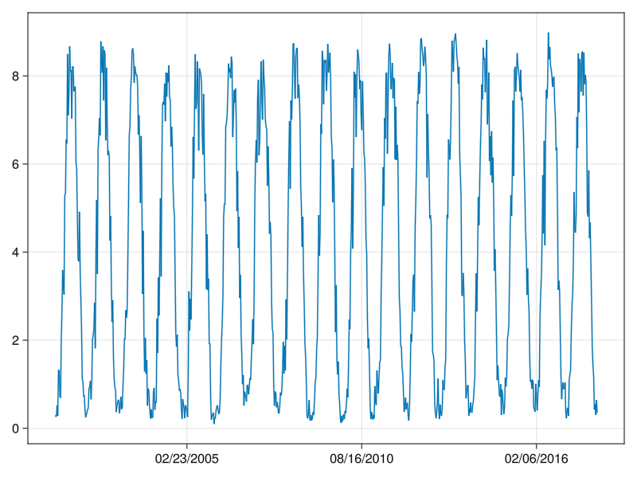
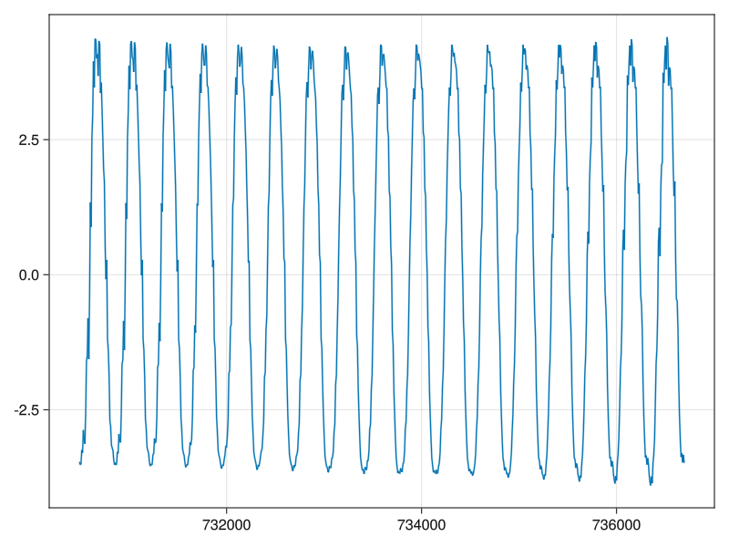
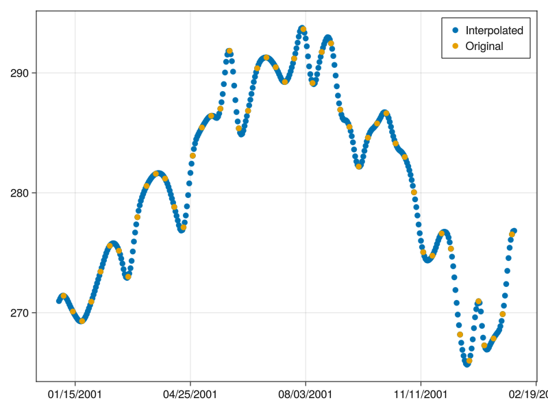

using Pkg
Pkg.activate(".")
Pkg.instantiate() Activating project at `~/Documents/BigDatafromSpace2023_quarto` Activating project at `~/Documents/BigDatafromSpace2023_quarto`So far we have only used mapslices in this tutorial. However, this can only cover very simple cases for a single input cube and computations on one or dimensions which either collapse or return the same dimension.
bucket = "esdl-esdc-v3.0.2"
store = "esdc-16d-2.5deg-46x72x1440-3.0.2.zarr"
path = "https://s3.bgc-jena.mpg.de:9000/" * bucket * "/" * store
c = Cube(open_dataset(zopen(path,consolidated=true,fill_as_missing=true)))
#c = Cube(joinpath(tutorialdir,"esdc_subset2.zarr"))144×72×989×42 YAXArray{Union{Missing, Float32},4} with dimensions:
Dim{:lon} Sampled{Float64} -178.75:2.5:178.75 ForwardOrdered Regular Points,
Dim{:lat} Sampled{Float64} -88.75:2.5:88.75 ForwardOrdered Regular Points,
Ti Sampled{DateTime} DateTime[1979-01-09T00:00:00, …, 2021-12-27T00:00:00] ForwardOrdered Irregular Points,
Dim{:Variable} Categorical{String} String[sensible_heat, potential_evaporation, …, net_ecosystem_exchange, snow_sublimation] Unordered
units: mm d^-1
Total size: 1.6 GB
mapCube functionis a generalization of mapslices, where you can annotate the exact signature of the function to be applied. For example the computation of the median over time can be written using mapCube. Here one hase to specify the dimension(s) that the user-defined function is going to operate on. For the computation of the median over time the only input dimension is time and there are no output dimensions as only a single value is returned. The user defined function passed to mapCube always has the signature f(outputs..., inputs...) and potentially followd by additional arguments and keyword args.
using Statistics
indims = InDims("time")
outdims = OutDims()
function apply_median(xout, xin)
x = filter(!ismissing, xin)
x = filter(!isnan,x)
#@show x
#filter!(!ismissing, x)
xout[] = isempty(x) ? missing : median(x)
endapply_median (generic function with 1 method)┌ Warning: (Dim{:region},) dims were not found in object.
└ @ DimensionalData.Dimensions /home/fcremer/.julia/packages/DimensionalData/STtQw/src/Dimensions/primitives.jl:736144×72×3 YAXArray{Union{Missing, Float32},3} with dimensions:
Dim{:lon} Sampled{Float64} -178.75:2.5:178.75 ForwardOrdered Regular Points,
Dim{:lat} Sampled{Float64} -88.75:2.5:88.75 ForwardOrdered Regular Points,
Dim{:Variable} Categorical{String} String["max_air_temperature_2m", "air_temperature_2m", "min_air_temperature_2m"] Unordered
Total size: 121.5 KB
144×72×3 YAXArray{Float64,3} with dimensions:
Dim{:lon} Sampled{Float64} -178.75:2.5:178.75 ForwardOrdered Regular Points,
Dim{:lat} Sampled{Float64} -88.75:2.5:88.75 ForwardOrdered Regular Points,
Dim{:Variable} Categorical{String} String["max_air_temperature_2m", "air_temperature_2m", "min_air_temperature_2m"] Unordered
Total size: 243.0 KB
This function is applied lazily and only computed when the data is worked with. This could be a mapCube operation, saving the data to disk or plotting the data.
Let’s make a slightly more complex computation to demonstrate a case where multiple outputs are generated. For examples, imagine we want to normalize every time series (to zero mean and unit variance), but at the same time return the means and variances in a single dataset for later re-use:
function norm(ts_out, mean_out, std_out, ts_in)
x = filter(!ismissing, ts_in)
tsshort = filter(!isnan,x)
if isempty(tsshort)
ts_out .= missing
mean_out[] = missing
std_out[] = missing
else
mean_out[] = mean(tsshort)
std_out[] = std(tsshort)
ts_out .= (ts_in .- mean_out[])./std_out[]
end
endnorm (generic function with 1 method)using NetCDF
indims = InDims("Time")
od_ts = OutDims("Time",path = "./normalized_ts.zarr",
backend=:zarr,overwrite=true)
od_m = OutDims(path = "./means.nc",backend=:netcdf, overwrite=true)
od_s = OutDims(path = "./stds.nc",backend=:netcdf, overwrite=true)
outdims = (od_ts, od_m, od_s)
tsnorm, means, stds = mapCube(norm,c[Variable=Where(contains("temp"))],indims=indims, outdims=outdims);function meanfilter(xout, xin)
if ismissing(xin[2,2])
xout .= missing
else
xout .= mean(skipmissing(xin))
end
endmeanfilter (generic function with 1 method)InDims((MovingWindow(YAXArrays.ByName("lon"), 1, 1), MovingWindow(YAXArrays.ByName("lat"), 1, 1)), Array, (YAXArrays.DAT.AllMissing(),), missing)144×72×3 YAXArray{Union{Missing, Float32},3} with dimensions:
Dim{:lon} Sampled{Float64} -178.75:2.5:178.75 ForwardOrdered Regular Points,
Dim{:lat} Sampled{Float64} -88.75:2.5:88.75 ForwardOrdered Regular Points,
Dim{:Variable} Categorical{String} String["max_air_temperature_2m", "air_temperature_2m", "min_air_temperature_2m"] Unordered
Total size: 121.5 KB
using Dates
dateformatfun(x) = Dates.format.(rata2datetime.(x), "mm/dd/yyyy")
gpp = c[Variable=At("gross_primary_productivity"),
time=Date(2001)..Date(2018,12,31),
lon=Near(11.3464),lat=Near(46.4946)]
fig,ax, pl = lines(datetime2rata.(lookup(gpp, Ti).data),gpp.data)
ax.xtickformat = dateformatfun
fig
So far the function applied here were very simple statistics. Just to stress again, that we are running arbitrary Julia code here, so for example if we want to use some package for time series decomposition like Forecast.jl:
using Forecast
stlres = stl(gpp.data[:],46,robust=true,verbose=false,
timestamp=lookup(gpp, Ti).data)LoadError: UndefVarError: `tempbozen` not definedfunction plot_stlres(t, org, stlres)
fig = Figure()
axorg = Axis(fig[1,1], title="Original data")
axseas = Axis(fig[2,1], title="Seasonal")
axtrend = Axis(fig[3,1], title="Trend")
axrem = Axis(fig[4,1], title="Remainder")
lines!(axorg,t, org)
lines!(axseas, t, stlres.decomposition[!,:Seasonal])
lines!(axtrend, t, stlres.decomposition[!, :Trend])
lines!(axrem, t, stlres.decomposition[!, :Remainder])
hidexdecorations!.([axorg, axseas, axtrend], grid=false)
axrem.xtickformat = dateformatfun
fig
endplot_stlres (generic function with 2 methods)In order to apply this over a full array we define the usual Trio: indims, outdims and the function to be applied. Here we create a new dimension for the output. There are 2 types of axes in YAXArrays, CategoricalAxis for unordered and RangeAxis for ordered dimensions. Here we create a categorical axis for our outputs. This means that inside the function the input array xin is a vector with of length n_timesteps and the output is a matrix of size n_timesteps x 3
import Logging
Logging.disable_logging(Logging.Info)
indims = InDims("time")
outdims = OutDims("time",Dim{:Scale}(["Seasonal", "Trend", "Remainder"]),
path = "decomposed.zarr",backend=:zarr, overwrite=true)
function decompose_TS(xout, xin)
any(isnan,xin) && return xout .= missing
stlres = stl(xin,46,robust=false,verbose=false)
_,seas,trend,rem = eachcol(stlres.decomposition)
xout[:,1] = seas
xout[:,2] = trend
xout[:,3] = rem
enddecompose_TS (generic function with 1 method)@time dec = mapCube(decompose_TS,
c[Variable=At("gross_primary_productivity"),
time=Date(2001)..Date(2018,12,31),
region="Italy"],
#lon=Near(11.3464),lat=Near(46.4946)],
indims = indims,
outdims = outdims
)Progress: 100%|█████████████████████████████████████████| Time: 0:02:11131.577868 seconds (204.94 M allocations: 576.936 GiB, 22.72% gc time)782×3×48×46 YAXArray{Union{Missing, Float32},4} with dimensions:
Ti Sampled{DateTime} DateTime[2001-01-05T00:00:00, …, 2017-12-31T00:00:00] ForwardOrdered Irregular Points,
Dim{:Scale} Categorical{String} String["Seasonal", "Trend", "Remainder"] Unordered,
Dim{:lon} Sampled{Float64} 6.625:0.25:18.375 ForwardOrdered Regular Points,
Dim{:lat} Sampled{Float64} 46.875:-0.25:35.625 ReverseOrdered Regular Points
Total size: 19.76 MB
fig, axseas, heatyax = lines( datetime2rata.(lookup(dec, Ti).data),
dec[lon=Near(11.3464),lat=Near(46.4946)].data[:,1])
fig
You see that the resulting array is a 4-dimensional array including the newly created axis. Lets do some plots:
#Compute variance and plot a map of seasonal variance
scalevar = mapslices(var,dec,dims="Time")
scalerange = mapslices(x->maximum(x) - minimum(x), dec, dims="Time")3×48×46 YAXArray{Union{Missing, Float32},3} with dimensions:
Dim{:Scale} Categorical{String} String["Seasonal", "Trend", "Remainder"] Unordered,
Dim{:lon} Sampled{Float64} 6.625:0.25:18.375 ForwardOrdered Regular Points,
Dim{:lat} Sampled{Float64} 46.875:-0.25:35.625 ReverseOrdered Regular Points
Total size: 25.88 KB
using Revise,EarthDataLab, DimensionalData,Rasters, Interpolations
#c = esdd()
ds = open_dataset(joinpath(tutorialdir,"esdc_subset2.zarr"))
tair = ds.air_temperature_2m
newlons = -179.95:0.1:179.95
newlats = -89.95:0.1:89.95
#Option 1:
tair1 = spatialinterp(tair,newlons,newlats, order =Quadratic())
tair1[lon=10..15, lat=50..60]
tair1italy = tair1[region="Italy",time=Near(DateTime(2015,6,1))]using Dates
newtimes = DateTime(1979):Day(1):DateTime(2021,12,31)
tair2 = interpolatecube(tair,Dict(:time=>newtimes), order=Dict(:time=>Quadratic()))
tair2Jan = tair2[time=DateTime(2001)..DateTime(2002,1,31), lon=Near(11.3464),lat=Near(46.4946)]
tairJan = tair[time=DateTime(2001)..DateTime(2002,1,31), lon=Near(11.3464),lat=Near(46.4946)]
fig, ax, pl = scatter(datetime2rata.(lookup(tair2Jan, Ti).data), tair2Jan.data[:],label="Interpolated")
scatter!(datetime2rata.(lookup(tairJan, Ti).data), tairJan.data[:], label="Original")
ax.xtickformat = dateformatfun
axislegend(ax)
figii = [(:time, 3)]
ai = nothing
ai = nothing
ai = 1
ii[ai] = (:time, 3)
intorder = (NoInterp(), NoInterp(), Quadratic(Line(OnGrid())))
PyObject <module 'scipy.ndimage' from '/home/fcremer/.julia/conda/3/lib/python3.9/site-packages/scipy/ndimage/__init__.py'>function gaussian_smooth(xout, xin)
missinds = ismissing.(xin)
smooth = scipyndimage.gaussian_filter(xin[.!missinds], sigma=4)
xout[.!missinds] .= smooth
endgaussian_smooth (generic function with 1 method)gpp_bozen_2010 = c[lon=Near(11.3464),lat=Near(46.4946),
time = DateTime(2010)..DateTime(2011),
Variable=At("gross_primary_productivity")]46-element YAXArray{Union{Missing, Float32},1} with dimensions:
Ti Sampled{DateTime} DateTime[2010-01-05T00:00:00, …, 2010-12-31T00:00:00] ForwardOrdered Irregular Points
units: W m-2
Total size: 184.0 bytes
@everywhere begin
using Pkg
Pkg.activate(".")
Pkg.instantiate()
#Pkg.status()
using YAXArrays, Statistics, NetCDF, Zarr
end Activating project at `~/Documents/conferences/202310_Bozen_OEMC_GW23` From worker 12: Activating project at `~/Documents/conferences/202310_Bozen_OEMC_GW23`
From worker 13: Activating project at `~/Documents/conferences/202310_Bozen_OEMC_GW23`
From worker 10: Activating project at `~/Documents/conferences/202310_Bozen_OEMC_GW23`
From worker 11: Activating project at `~/Documents/conferences/202310_Bozen_OEMC_GW23`# Find relevant data
folder = "/home/fcremer/Daten/Tutorials/s1data"
pol = "VH"
allfiles = Iterators.flatten([joinpath.((t[1],), t[3]) for t in walkdir(folder)])
nonhiddenfiles = Iterators.filter(x->!startswith(basename(x),"."), allfiles)
filteredfiles = collect(Iterators.filter(x->occursin(pol,x), nonhiddenfiles))4-element Vector{String}:
"/home/fcremer/Daten/Tutorials/s" ⋯ 30 bytes ⋯ "228_127_VH_grd_mli_norm_geo.tif"
"/home/fcremer/Daten/Tutorials/s" ⋯ 30 bytes ⋯ "253_127_VH_grd_mli_norm_geo.tif"
"/home/fcremer/Daten/Tutorials/s" ⋯ 30 bytes ⋯ "244_127_VH_grd_mli_norm_geo.tif"
"/home/fcremer/Daten/Tutorials/s" ⋯ 30 bytes ⋯ "309_127_VH_grd_mli_norm_geo.tif"# parse the time steps of the data
using Dates
function getdate(x,reg = r"[0-9]{8}T[0-9]{6}", df = dateformat"yyyymmddTHHMMSS")
m = match(reg,x).match
date =DateTime(m,df)
end
dates = getdate.(filteredfiles)4-element Vector{DateTime}:
2016-10-03T10:12:28
2016-10-03T10:12:53
2020-01-16T10:12:44
2020-01-16T10:13:094-element Vector{String}:
"/home/fcremer/Daten/Tutorials/s" ⋯ 30 bytes ⋯ "228_127_VH_grd_mli_norm_geo.tif"
"/home/fcremer/Daten/Tutorials/s" ⋯ 30 bytes ⋯ "253_127_VH_grd_mli_norm_geo.tif"
"/home/fcremer/Daten/Tutorials/s" ⋯ 30 bytes ⋯ "244_127_VH_grd_mli_norm_geo.tif"
"/home/fcremer/Daten/Tutorials/s" ⋯ 30 bytes ⋯ "309_127_VH_grd_mli_norm_geo.tif""""
grouptimes(times, timediff=200000)
Group a sorted vector of time stamps into subgroups
where the difference between neighbouring elements are less than `timediff` milliseconds.
This returns the indices of the subgroups as a vector of vectors.
"""
function grouptimes(times, timediff=200000)
@assert sort(times) == times
group = [1]
groups = [group]
for i in 2:length(times)
t = times[i]
period = t - times[group[end]]
if period.value < timediff
push!(group, i)
else
push!(groups, [i])
group = groups[end]
end
end
return groups
end
groupinds = grouptimes(sdates, 200000)2-element Vector{Vector{Int64}}:
[1, 2]
[3, 4]datasets = AG.read.(sfiles)
datasetgroups = [datasets[group] for group in groupinds]
#We have to save the vrts because the usage of nested vrts is not working as a rasterdataset2-element Vector{Vector{ArchGDAL.IDataset}}:
[GDAL Dataset (Driver: GTiff/GeoTIFF)
File(s):
/home/fcremer/Daten/Tutorials/s1data/S1A__IW___D_20161003T101228_127_VH_grd_mli_norm_geo.tif
Dataset (width x height): 5816 x 4326 (pixels)
Number of raster bands: 1
[GA_ReadOnly] Band 1 (Gray): 5816 x 4326 (Float32)
, GDAL Dataset (Driver: GTiff/GeoTIFF)
File(s):
/home/fcremer/Daten/Tutorials/s1data/S1A__IW___D_20161003T101253_127_VH_grd_mli_norm_geo.tif
Dataset (width x height): 4596 x 5043 (pixels)
Number of raster bands: 1
[GA_ReadOnly] Band 1 (Gray): 4596 x 5043 (Float32)
]
[GDAL Dataset (Driver: GTiff/GeoTIFF)
File(s):
/home/fcremer/Daten/Tutorials/s1data/S1A__IW___D_20200116T101244_127_VH_grd_mli_norm_geo.tif
Dataset (width x height): 5815 x 4325 (pixels)
Number of raster bands: 1
[GA_ReadOnly] Band 1 (Gray): 5815 x 4325 (Float32)
, GDAL Dataset (Driver: GTiff/GeoTIFF)
File(s):
/home/fcremer/Daten/Tutorials/s1data/S1A__IW___D_20200116T101309_127_VH_grd_mli_norm_geo.tif
Dataset (width x height): 4595 x 5044 (pixels)
Number of raster bands: 1
[GA_ReadOnly] Band 1 (Gray): 4595 x 5044 (Float32)
]temp = tempdir()
outpaths = [joinpath(temp, splitext(basename(sfiles[group][1]))[1] * ".vrt") for group in groupinds]
vrt_grouped = AG.unsafe_gdalbuildvrt.(datasetgroups)2-element Vector{ArchGDAL.Dataset}:
GDAL Dataset (Driver: VRT/Virtual Raster)
File(s):
/home/fcremer/Daten/Tutorials/s1data/S1A__IW___D_20161003T101228_127_VH_grd_mli_norm_geo.tif
/home/fcremer/Daten/Tutorials/s1data/S1A__IW___D_20161003T101253_127_VH_grd_mli_norm_geo.tif
Dataset (width x height): 5816 x 7500 (pixels)
Number of raster bands: 1
[GA_Update] Band 1 (Gray): 5816 x 7500 (Float32)
GDAL Dataset (Driver: VRT/Virtual Raster)
File(s):
/home/fcremer/Daten/Tutorials/s1data/S1A__IW___D_20200116T101244_127_VH_grd_mli_norm_geo.tif
/home/fcremer/Daten/Tutorials/s1data/S1A__IW___D_20200116T101309_127_VH_grd_mli_norm_geo.tif
Dataset (width x height): 5815 x 7500 (pixels)
Number of raster bands: 1
[GA_Update] Band 1 (Gray): 5815 x 7500 (Float32)AG.write.(vrt_grouped, outpaths)
vrt_grouped = AG.read.(outpaths)
vrt_vv = AG.unsafe_gdalbuildvrt(vrt_grouped, ["-separate"])
rvrt_vv = AG.RasterDataset(vrt_vv)GDAL Dataset (Driver: VRT/Virtual Raster)
File(s):
/tmp/S1A__IW___D_20161003T101228_127_VH_grd_mli_norm_geo.vrt
/tmp/S1A__IW___D_20200116T101244_127_VH_grd_mli_norm_geo.vrt
Dataset (width x height): 5816 x 7500 (pixels)
Number of raster bands: 2
[GA_Update] Band 1 (Undefined): 5816 x 7500 (Float32)
[GA_Update] Band 2 (Undefined): 5816 x 7500 (Float32)5816×7500×2 YAXArray{Float32,3} with dimensions:
Dim{:Y} Sampled{Float64} 561609.15:30.0:736059.15 ForwardOrdered Regular Points,
Dim{:X} Sampled{Float64} 9.48724066e6:-30.0:9.26227066e6 ReverseOrdered Regular Points,
Dim{:Band} Categorical{String} String["Band_1", "Band_2"] ForwardOrdered
Total size: 332.79 MB
# Set the timesteps from the bandnames as time axis
dates_grouped = [sdates[group[begin]] for group in groupinds]
taxis = Ti(dates_grouped)
cube = DimensionalData.set(cube, Dim{:Band}=>taxis)5816×7500×2 YAXArray{Float32,3} with dimensions:
Dim{:Y} Sampled{Float64} 561609.15:30.0:736059.15 ForwardOrdered Regular Points,
Dim{:X} Sampled{Float64} 9.48724066e6:-30.0:9.26227066e6 ReverseOrdered Regular Points,
Ti Categorical{DateTime} DateTime[DateTime("2016-10-03T10:12:28"), DateTime("2020-01-16T10:12:44")] ForwardOrdered
Total size: 332.79 MB
5816×7500×2 YAXArray{Float32,3} with dimensions:
Dim{:Y} Sampled{Float64} 561609.15:30.0:736059.15 ForwardOrdered Regular Points,
Dim{:X} Sampled{Float64} 9.48724066e6:-30.0:9.26227066e6 ReverseOrdered Regular Points,
Ti Categorical{DateTime} DateTime[DateTime("2016-10-03T10:12:28"), DateTime("2020-01-16T10:12:44")] ForwardOrdered
Total size: 332.79 MB
5816×7500×2 YAXArray{Float32,3} with dimensions:
Dim{:Y} Sampled{Float64} 561609.15:30.0:736059.15 ForwardOrdered Regular Points,
Dim{:X} Sampled{Float64} 9.48724066e6:-30.0:9.26227066e6 ReverseOrdered Regular Points,
Ti Categorical{DateTime} DateTime[DateTime("2016-10-03T10:12:28"), DateTime("2020-01-16T10:12:44")] ForwardOrdered
Total size: 332.79 MB
Similar to Rasters.jl, also YAXArrays provides a method to represent labelled arrays as a table. However, as everything in YAXArrays, lazy is the default as well for tables. So the CubeTable constructor will not load any data but will provide an iterator over table chunks that one can use for further analysis. Here it is guaranteed that these subtables fit into memory and they can be distributed for parallel data loading and processing
using Revise, YAXArrays, Zarr, Plots
ds = open_dataset("./esdc_subset2.zarr")
countryds = open_dataset("./countries.zarr")
countryds.countries.properties["labels"] = Dict(parse(Int,k)=>v for (k,v) in countryds.countries.properties["labels"])
countryds.countries.properties["Name"] = "Country"
countryds.countriesArgumentError: ArgumentError: Package Plots not found in current path.
- Run `import Pkg; Pkg.add("Plots")` to install the Plots package.
tab = CubeTable(gpp = ds.gross_primary_productivity, tair = ds.air_temperature_2m, country = countryds.countries)UndefVarError: UndefVarError: `ds` not definedIt is possible to loop over or index into a table iterator to get one of the subtables or . Note that even here nothing is loaded yet.
Only when accessing a specific column, the data is actually loaded
But since a subtable implements the Tables interface we can also convert to a DataFrame
ArgumentError: ArgumentError: Package DataFrames not found in current path.
- Run `import Pkg; Pkg.add("DataFrames")` to install the DataFrames package.These tables can be used for aggregating data. Suppose we want to compute the mean temperature by country, YAXArrays provides some tools to do this in connection with OnlineStats.jl and WeightedOnlineStats.jl
ArgumentError: ArgumentError: Package WeightedOnlineStats not found in current path.
- Run `import Pkg; Pkg.add("WeightedOnlineStats")` to install the WeightedOnlineStats package.#@everywhere begin
using Pkg
Pkg.activate(".")
using YAXArrays, Zarr, Plots, WeightedOnlineStats, OnlineStats, Dates
#end Activating project at `~/Documents/conferences/202310_Bozen_OEMC_GW23`ArgumentError: ArgumentError: Package Plots not found in current path.
- Run `import Pkg; Pkg.add("Plots")` to install the Plots package.UndefVarError: UndefVarError: `tab` not defined